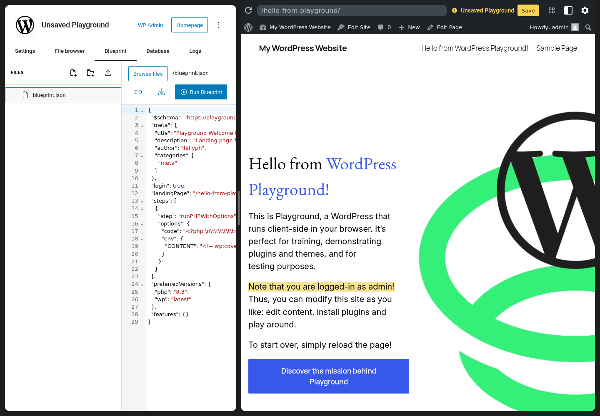
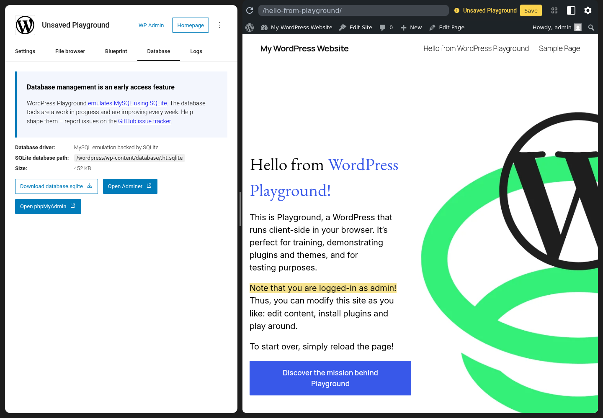
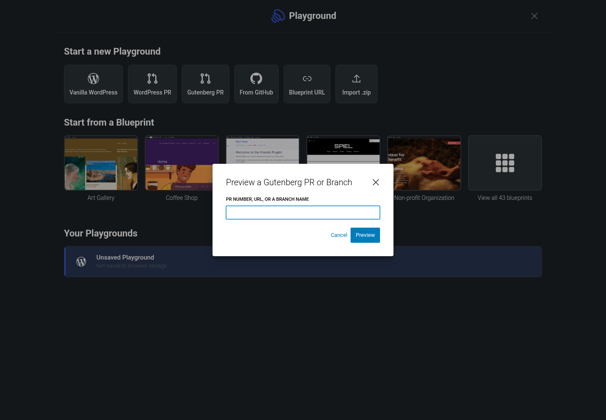

Hello from WordPress Playground!
This is Playground, a WordPress that runs client-side in your browser. It is ready for training, plugins, themes, and testing.
Logged in as adminThis is Playground, a WordPress that runs client-side in your browser. It is ready for training, plugins, themes, and testing.
Logged in as adminSaved
Manager
Files
1 <?php define( 'CONCATENATE_SCRIPTS', false ); 2 /** The base configuration for WordPress. */ 3 define( 'DB_NAME', 'database_name_here' ); 4 define( 'DB_USER', 'username_here' ); 5 define( 'DB_PASSWORD', 'password_here' ); 6 define( 'DB_HOST', 'localhost' ); 7 define( 'DB_CHARSET', 'utf8mb4' ); 8 define( 'DB_COLLATE', '' ); 9 if ( ! defined( 'ABSPATH' ) ) define( 'ABSPATH', __DIR__ . '/' );
Blueprint
1 { 2 "$schema": "https://playground.wordpress.net/blueprint-schema.json", 3 "meta": { "title": "Playground Welcome Page" }, 4 "login": true, 5 "landingPage": "/hello-from-playground/", 6 "preferredVersions": { "php": "8.3", "wp": "latest" }, 7 "steps": [ { "step": "runPHPWithOptions" } ], 8 "features": { "networking": true } 9 }
Data
Logs
Blueprints
 Art GalleryWebsite · Personal
Art GalleryWebsite · Personal Coffee ShopWooCommerce · Store
Coffee ShopWooCommerce · Store
Feed Reader with the Friends PluginRSS · social web Gaming NewsWebsite · News
Gaming NewsWebsite · News
Non-profit OrganizationWebsite · Organization
Personal BlogWebsite · Personal